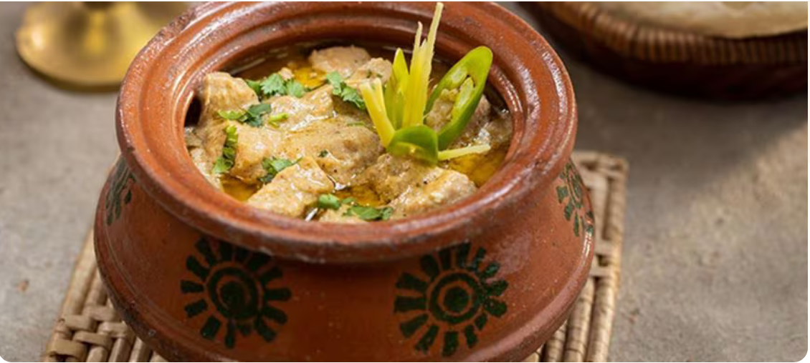

Chicken WhiteHandi

Description
This delightful recipe of Chicken White Handi originated from Mughlai cuisine.
We take the flavor to the next level with Knorr Professional Chicken Soup Stock
and Hellmann’s Classic Mayonnaise, to achieve a velvety texture that is much more
delicious. Depending on how you choose to serve, it will work both in a buffet
and a set menu.
Ingredients
- Sesame seeds 60 g
- Poppy seeds 30 g
- Cashew nuts 120 g
- Yoghurt 200 g
- Salt 25 ml
- White Pepper 5 g
- Black pepper 5 g
- Ginger and garlic, paste 100 g
- Cream 150 g
- Chicken breast, cubes 1.80 kg
Steps
- Grind together very finely sesame seeds, poppy seeds and cashew nuts, mix with yogurt,
salt, white pepper, black pepper, ginger garlic and cream.
- Pour the marinade over the chicken and leave for 2 hours.
- Heat butter and 50 ml of Rafhan Corn Oil in a handi.
- Add marinated chicken and Knorr Professional Chicken Soup Stock, leave it on low flame
for 20 minutes or until chicken is cooked.
- Finally add cream and Hellmann’s Classic Mayonnaise.
- Garnish with coriander leaves and green chillies to serve.